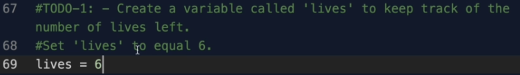
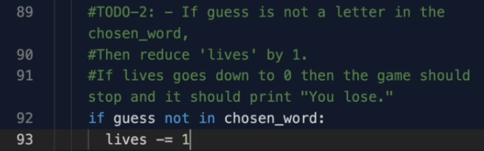
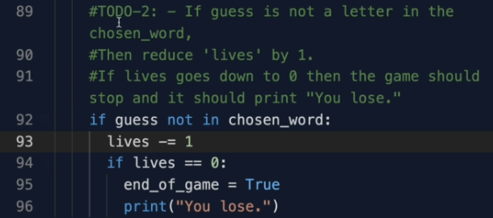
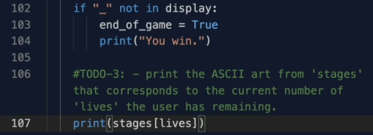

نبدأ في حل تحدي اليوم و في المرحلة الاولى سهلة وهو صنع منغير يسمى lives وسوف يقوم بحفظ عددالحيوات المتبقية للمستخدم و قيمته الابتدائية هي 6
ننتقل للمرحلة الثانية وهي ان ننقص عدد الحيوات المتبقية لللاعب في حال كان الحرف الذي حزره خاطئ اي ليس في الكلمة المختارة والخدعة هنا انه لايمكنك وضع التحقق مع التحقق السابف داخل ال for loop ولكن في نفس المستوى مع حلقة ال for اي خارج الحلقة for ولكن داخل الحلقة while ونكتب
الان بعد ما انقصنا حياة واصبحت تساوي 0 في هذه الحالة اللعبة يجب ان تنتهي ونخبر اللاعب انه خسر ونفعل ذلك باستخدام عبارة if بعد انقاص حياة مباشرة وتذكر انه انهاء اللعبة يعني توقيف الحلقة while وتوقيف هذه الاخيرة يعني قلب الشرط الخاص بها
يمكنك لعب اللعبة الان والتحقق ان كانت حقا تنتهي في حالة ادخال المستخدم ست حروف خاطئة
في المرحلة الاخيرة من التحدي سوف نقوم بطباعة ال ascii art من قائمة stages السابقة على حسب عدد الحيوات المتبقية لللاعب ومن حسن الحظ تم ترتيب الصور ترتيب تنازلي يعني انه عند المؤشر 6 اي عدد الحيوات كامل الصورة فارغة والصورة عند المؤشر 0 اي عدد الحيوات انتهي الصورة لرجل معلق كامل وهو نهاية اللعبة
اذن نكتب
كن حذرا مع ال indentation و الفراغات قبل الاسطر الخاصة بك فالطباعة هنا داخل حلقة while وفي نفس المستوى مع عبارة if
نلتقي في التحدي الاخير من بناء هذه اللعبة حيث سوف تجد الكود الخاص بهذه اللعبة كاملا